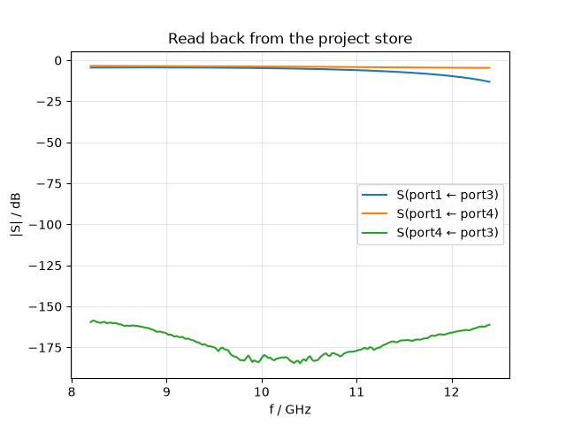
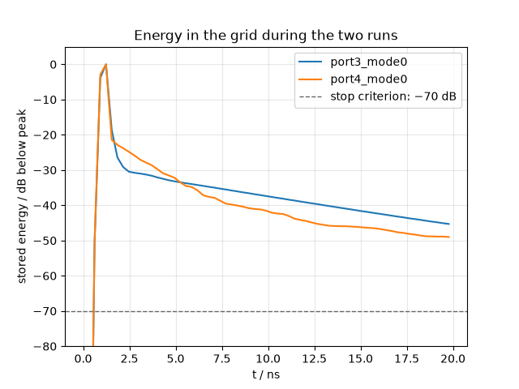
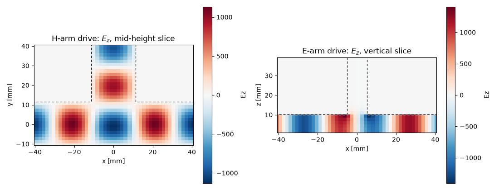
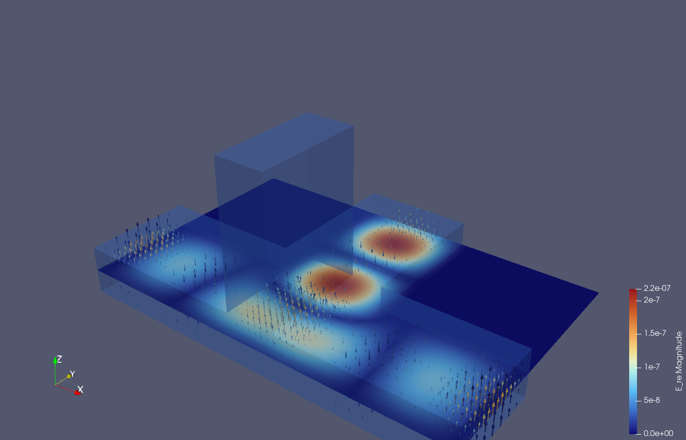

Note
Go to the end to download the full example code.
Using disk storage: monitors at scale, resume, ParaView#
Everything so far lived in RAM: results and monitor data existed as long as the Python session and vanished with it — and a monitor held only the run it had just witnessed. This tutorial gives a simulation a project directory instead. The model, every run’s port signals, every monitor’s data and a resumable checkpoint all stream to disk while the solver marches; evaluation becomes a separate step that can happen in another script, on another day — or in ParaView.
The device is the magic tee from the previous tutorial, this time carrying a full-volume 3D field monitor — exactly the kind of data you do not want to keep in memory, and the kind ParaView is made for.
The tee again, in one block#
Geometry, ports and mesh are unchanged from the previous tutorial — three WR-90 arms united into a tee, four single-mode ports, and the band-limited 8.2–12.4 GHz excitation.
import os
import tempfile
import matplotlib.pyplot as plt
import numpy as np
import magnelio as mio
from magnelio import geo, monitors, ports
a = 22.86e-3 # WR-90 broad wall
b = 10.16e-3 # WR-90 narrow wall
arm = 30.0e-3 # arm length beyond the junction
pec = mio.Material.pec()
air = mio.Material.air()
collinear = geo.Brick(origin=(-(a / 2 + arm), -a / 2, 0.0), size=(a + 2 * arm, a, b), material=air)
h_arm = geo.Brick(origin=(-a / 2, 0.0, 0.0), size=(a, a / 2 + arm, b), material=air)
e_arm = geo.Brick(origin=(-b / 2, -a / 2, 0.0), size=(b, a, b + arm), material=air)
model = mio.GeometryModel(background=pec)
model.add(geo.Union(collinear, h_arm, e_arm, name="tee"))
model.add_port(ports.PortWaveguide(name="port1", plane="xmin", n_modes=1))
model.add_port(ports.PortWaveguide(name="port2", plane="xmax", n_modes=1))
model.add_port(ports.PortWaveguide(name="port3", plane="ymax", n_modes=1))
model.add_port(ports.PortWaveguide(name="port4", plane="zmax", n_modes=1))
f_min, f_max = 8.2e9, 12.4e9
mesh = mio.Mesh.from_geometry(
model,
mio.MeshControl(min_nodes_per_wavelength=15, min_cell_size=1.59e-3),
f_max=f_max,
)
A 3D monitor and a project directory#
The monitor spans the whole domain this time — omitting
corners records everywhere — and accumulates the complex E and H
fields at 10 GHz. On an in-RAM run a volume monitor is the fastest
way to fill your memory; on a project run its data streams to disk.
Memory is not the only thing it spends. Left alone, the running DFT
takes a contribution from every cell at every time step, which on
this model costs as much again as the solve itself. interval
thins that sampling, and the
accuracy it trades away is bounded by how many samples per period of
the highest frequency in the band remain: at twelve, this run
lands on every second step and the recorded field moves by 2e-5.
Sizing the interval from f_max rather than from the monitor’s
own 10 GHz is the safe habit — anything the fields carry above the
resulting Nyquist frequency would fold onto the recorded bin.
The project itself is just a directory path. Here it goes to a temporary folder so this page can build anywhere; in real work you would pick a permanent location on fast local storage, because the solver writes into it continuously.
volume = monitors.MonitorFieldFrequency(
freqs=[10.0e9],
fields=["E", "H"],
interval=1.0 / (12 * f_max),
name="volume_pattern",
)
proj_dir = os.path.join(tempfile.mkdtemp(), "magic_tee")
analysis = mio.AnalysisScatteringTD(
mesh=mesh,
f_min=f_min,
f_max=f_max,
monitors=(volume,),
project=proj_dir,
geometry=model,
verbose=False,
)
result = analysis.run(excited=["port3", "port4"], port_signal_stop_db=50.0)
print(type(result).__name__, "->", result.status)
UserWarning: h5py is running against HDF5 2.2.0 when it was built against 2.1.0, this may cause problems
Project -> done
run() on a project returns not an in-RAM result but a reader
over the directory it just wrote. Both excitations now live on disk
as separate named runs — including, unlike in the previous tutorial,
both sets of monitor data. A look at the files shows where
everything went (sizes in kB):
for root, _dirs, files in sorted(os.walk(proj_dir)):
rel = os.path.relpath(root, proj_dir)
prefix = "" if rel == "." else rel + "/"
for name in sorted(files):
size = os.path.getsize(os.path.join(root, name))
print(f"{prefix + name:<58} {size / 1e3:9.1f}")
geometry.brep 16.6
geometry.json 0.8
geometry.vtm 0.3
mesh.h5 11874.2
project.json 3.2
geometry/geometry_0.vtp 3.8
runs/port3_mode0/checkpoint.h5 1493.6
runs/port3_mode0/fields_freq.h5 3553.3
runs/port3_mode0/paraview_open.py 18.9
runs/port3_mode0/results.h5 633.1
runs/port3_mode0/paraview/volume_pattern.pvd 0.2
runs/port3_mode0/paraview/volume_pattern/f_0000.vtr 1316.0
runs/port4_mode0/checkpoint.h5 1493.6
runs/port4_mode0/fields_freq.h5 3553.3
runs/port4_mode0/paraview_open.py 18.9
runs/port4_mode0/results.h5 633.1
runs/port4_mode0/paraview/volume_pattern.pvd 0.2
runs/port4_mode0/paraview/volume_pattern/f_0000.vtr 1314.0
project.json carries the run registry and the reconstruction
recipe, mesh.h5 and geometry.brep the exact model, and each
run directory holds its streamed port signals (results.h5), the
monitor’s frequency-domain volume (fields_freq.h5), a resumable
checkpoint.h5 — and a ready-made ParaView session, more on that
below.
Evaluating from disk — in a different session#
The reader that run() returned is the same object any other
process gets from magnelio.open_project() — nothing below
needs the analysis, the mesh, or the solver. This is the
separation the store exists for: a cluster job computes, your
laptop evaluates. S-parameters are derived on read from the stored
signals, with the accessors you already know:
proj = mio.open_project(proj_dir)
print(proj.status, "| runs:", list(proj.runs))
fig, ax = proj.plot_s(("port1", "port3"), ("port1", "port4"), ("port4", "port3"))
ax.set_title("Read back from the project store")

done | runs: ['port3_mode0', 'port4_mode0']
Text(0.5, 1.0, 'Read back from the project store')
Watching a run: the energy trace#
Alongside the port signals the store keeps the total field energy in the grid, sampled whenever the solver checks its stopping criterion. Reading it back is one call, and the curve is the clearest single picture of what a time-domain run does: the excitation pumps energy in, the ports carry it out, and the run ends when what remains has fallen far enough below the peak.
This is also the trace to watch while a long simulation is still
running. Each sample is flushed to disk as it is taken, so a second
process — another shell, a notebook on your laptop — can
open_project() the very same directory and follow
the progress live, without touching the job that is computing.
trace = proj.energy_trace("port3")
fig, ax = plt.subplots()
ax.semilogy(trace["time"] * 1e9, trace["energy"])
ax.set_xlabel("time [ns]")
ax.set_ylabel("stored field energy [J]")
ax.set_title("Energy in the grid during the H-arm run")
# clamp the y-axis to the decades that carry the decay
peak = trace["energy"].max()
ax.set_ylim(peak * 1e-6, peak * 3)
ax.grid(True, alpha=0.3)
print(f"energy samples stored: {len(trace)}")
print(f"peak {trace['energy'].max():.3e} J -> final {trace['energy'][-1]:.3e} J")

energy samples stored: 61
peak 7.836e-11 J -> final 2.513e-15 J
The monitor data of every run is preserved — where the previous
tutorial had to harvest its in-RAM monitors between two run()
calls, the store keeps both volumes side by side,
and monitors_for picks a run by its excitation. Because the
stored pattern is a full 3D volume, the slice plane is chosen at
plot time, not at declaration time — the H-arm drive on the
mid-height cut, the E-arm drive on the vertical cut, both from data
recorded in the same simulation:
mon_h = proj.monitors_for(("port3", 0))["volume_pattern"]
mon_e = proj.monitors_for(("port4", 0))["volume_pattern"]
fig, axes = plt.subplots(1, 2, figsize=(11, 4.2))
mon_h.plot(
component="Ez", normal="z", position=b / 2, plot_type="color", geometry=model, ax=axes[0]
)
mon_e.plot(component="Ez", normal="y", position=0.0, plot_type="color", geometry=model, ax=axes[1])
axes[0].set_title("H-arm drive: $E_z$, mid-height slice")
axes[1].set_title("E-arm drive: $E_z$, vertical slice")
fig.tight_layout()

Running longer: resume#
Every run directory carries a checkpoint with the complete solver
state, written periodically and at the end of the run.
magnelio.resume() rebuilds the run from the stored recipe,
loads that checkpoint and continues the same trajectory — no seam,
no restart. That is the answer to three situations: a crashed or
interrupted job, a stop criterion chosen too shallow, and the
convergence question “would more ring-down change my S-parameters?”.
Here we ask the third one, extending the H-arm run by 2000 steps:
s13_before = proj.S("port1", "port3")
n_before = proj.runs["port3_mode0"]["n_steps"]
proj = mio.resume(proj_dir, excited="port3", total_time_steps=n_before + 2000, verbose=False)
s13_after = proj.S("port1", "port3")
print(f"steps: {n_before} -> {n_before + 2000}")
print(f"max |dS13| from 2000 extra steps: {np.abs(s13_after - s13_before).max():.1e}")
steps: 6001 -> 8001
max |dS13| from 2000 extra steps: 4.7e-04
The change is far below any engineering tolerance — the original stop criterion was deep enough, and finding that out cost two thousand time steps instead of a rerun. (A resumed run appends to the same streams; the monitor volume and the ParaView session are updated along with it.)
Into ParaView#
Slice plots answer questions you already know how to ask; a 3D volume invites the ones you don’t. Every project run ships with a generated ParaView session for its monitors — the files appeared in the listing above:
run_dir = os.path.join(proj_dir, "runs", "port3_mode0")
for name in sorted(os.listdir(run_dir)):
if "paraview" in name and os.path.isfile(os.path.join(run_dir, name)):
print(name)
paraview_open.py
paraview.pvsm is a double-clickable state file: geometry as
translucent solids, slice and clip widgets through the field
volume, arrow glyphs on an even lattice with sensible lengths, and
a threshold-gated volume glyph set — assembled and scaled to the
data, so the first thing you see is the field, not a grey box.
paraview_open.py builds the same session from scratch
(paraview --script=paraview_open.py) if you prefer a live
pipeline over a state file. A view of this very project, after
dragging the slice plane to the tee’s mid-height and switching the
volume glyph set on:
{kind=link}

Where to go next#
New in this tutorial: project= turns a simulation into a
directory on disk — S-parameters and every run’s monitor volumes
read back with magnelio.open_project(), evaluation decoupled
from computation, resume continuing a checkpointed run without a
seam, and a generated ParaView session per run. What we did not
need: keeping the Python session alive, or re-running anything.
A second process can even open the project while the solver
marches and watch the energy and S-parameters converge live.
The tee is now exhausted as a teaching device for closed structures. The next tutorial opens the domain: absorbing boundaries, and with them the first antenna.
Total running time of the script: (0 minutes 29.359 seconds)